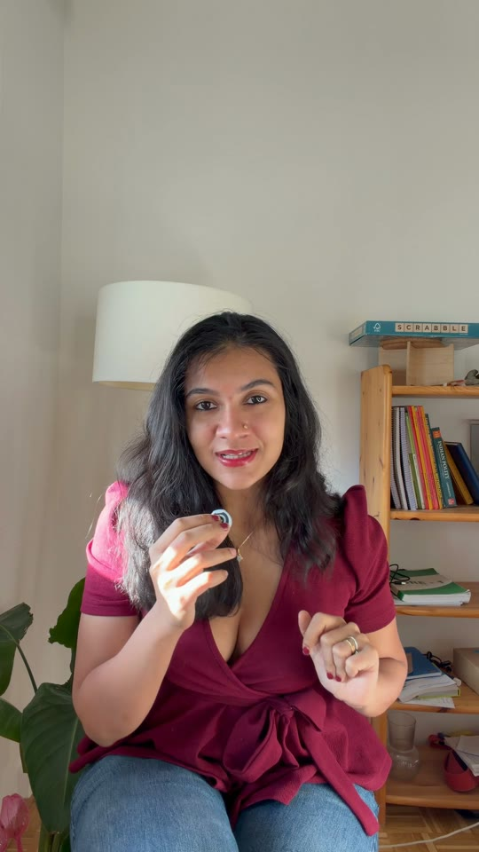
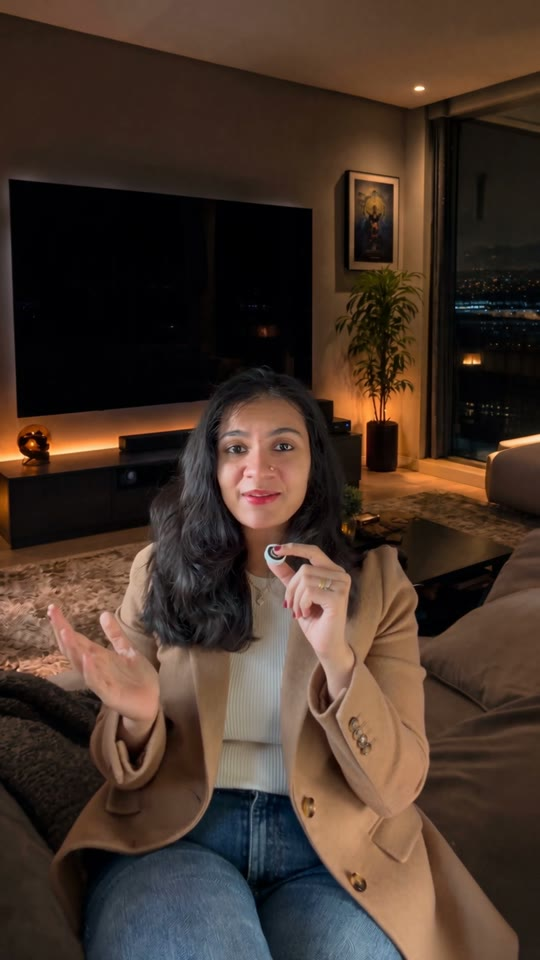
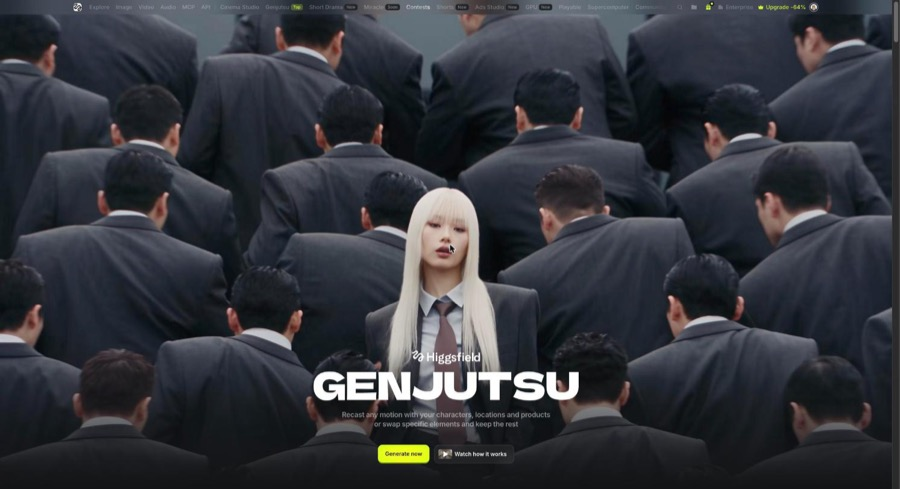

Change the room behind youwithout reshooting
Two ways. One uses Claude on the plan you already pay for. One uses Higgsfield and looks the most real. Here are the exact prompts and steps for both.


Film it so the swap looks clean
- Phone on a stand, not in your hand. A still camera sells the fake.
- Sit on something (a chair, a sofa). Then put a sofa or bench in the new room so you're not floating.
- Leave space around your hair and shoulders. Plain walls behind you cut out cleanest.
- Want things to change on a snap? Snap clearly, and cut on the snap, not on a word.
Way 1 · ClaudeClaude Pro, $20/mo · nothing extra
Claude cuts you out of your real video, puts any photo behind you and matches the colours so it looks like you're there. Best for: a new background on a talking video.
- Open the Claude desktop app and go to the Code tab (it's in the Pro plan).
- Make a folder with two files: your video (call it
talk.mp4) and the background photo you want (background.jpg). Pick that folder in Claude. - Paste this prompt:
Then fine-tune it like you'd talk to an editor:
What it can't do: change your clothes or the light on your face. For that, use Way 2.

Way 2 · Higgsfield GenjutsuUses credits · not sponsored
Genjutsu edits your real video: it swaps the room, your outfit and even the light on your face, and keeps your face yours. Best for: when it has to fool everyone.

- Go to higgsfield.ai and open Genjutsu.
- Upload your clip. Trim it first: it needs at least 4 seconds, and credits are charged per second.
- Attach a reference photo of the room you want (and a photo of the outfit, if you're changing clothes).
- Paste this prompt and generate:
- One change per snap. Do room, then outfit, then light as separate short clips and cut them together on your snaps.
- Clips come back a little shorter than you sent (4s came back as about 3.7s). Leave a bit of spare video at the end.
- Check your face, clothes and trousers in every clip. If something drifts (a colour, your shape), regenerate that one clip.
| You want | Use |
|---|---|
| Just a new background | Claude. Honestly good enough. |
| New room + outfit + lighting | Higgsfield Genjutsu |
| No extra cost | Claude (on your Pro plan) |
| It has to look 100% real | Higgsfield Genjutsu |
Or just talk to your phone
I'm building Hop: you'll do all of this inside the app by talking to it. No Claude subscription of your own needed.
Join the Hop waitlist